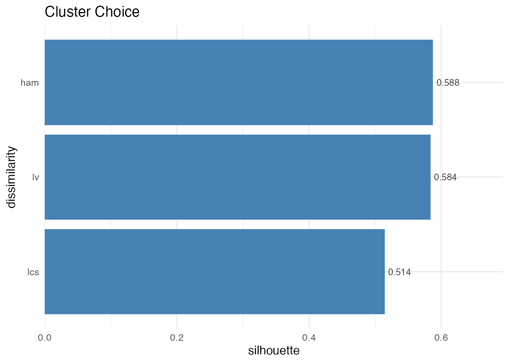
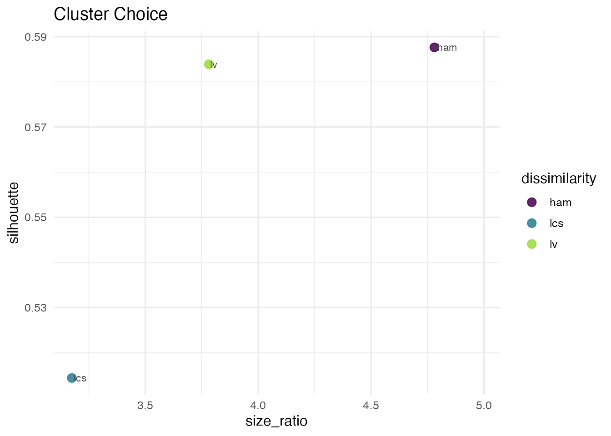
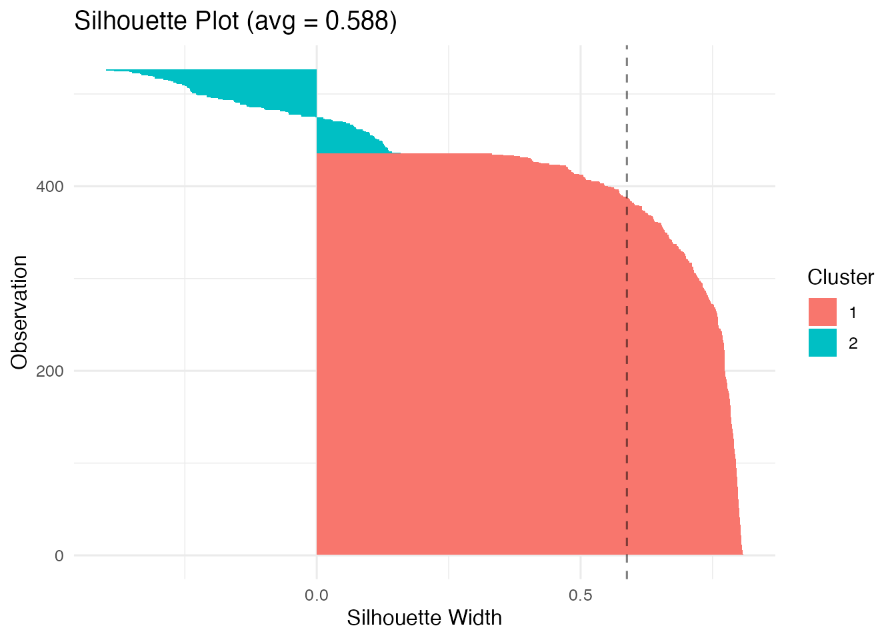
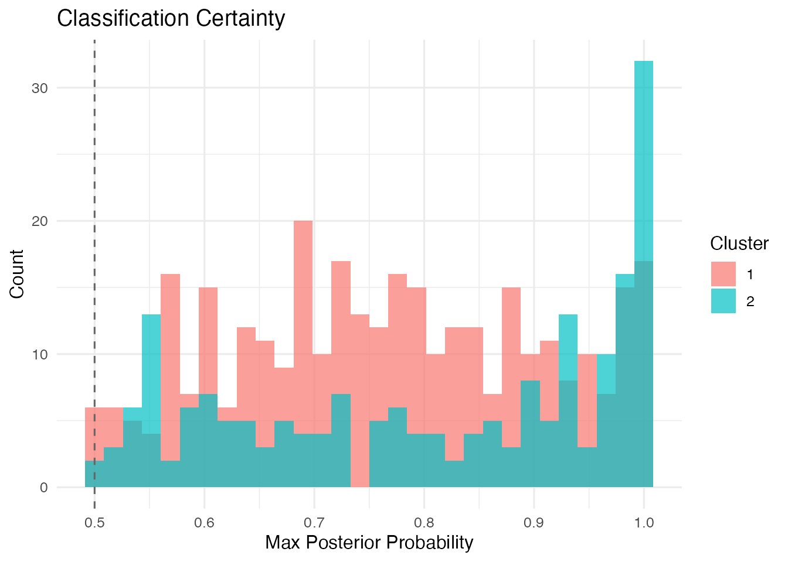
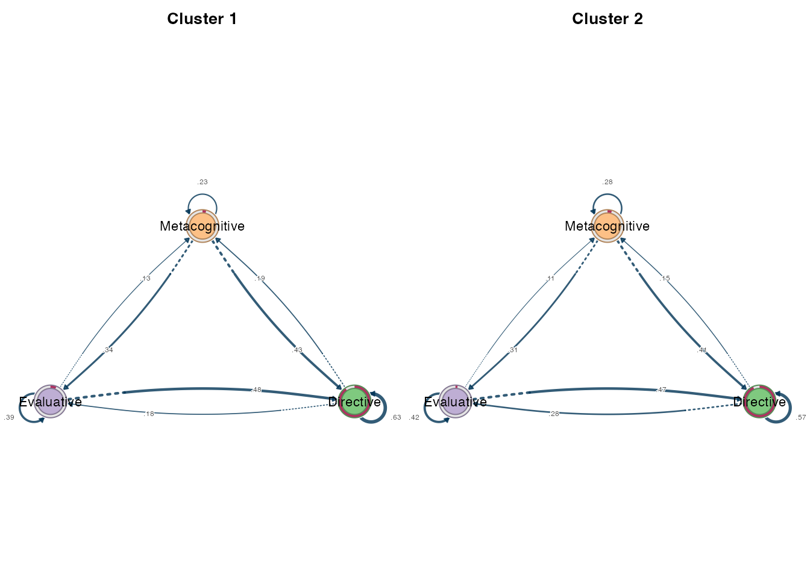

Sequence Clustering
Mohammed Saqr
University of Eastern FinlandSonsoles López-Pernas
University of Eastern FinlandKamila Misiejuk
FernUniversität in Hagen, GermanySource:
vignettes/clustering.Rmd
clustering.RmdIntroduction
Clusters represent subgroups within the data that share similar
patterns. Such patterns may reflect similar temporal dynamics (when we
are analyzing sequence data, for example) or relationships between
variables (as is the case in psychological networks). Units within the
same cluster are more similar to each other, while units in different
clusters differ more substantially. In this vignette, we demonstrate how
to perform clustering on sequence data using Nestimate.
Data
To illustrate clustering, we will use the human_long
dataset, which contains 10,796 coded human interactions from 429
human-AI pair programming sessions across 34 projects. Each row
represents a single interaction event with a timestamp, session
identifier, and action label.
library(cograph)
library(Nestimate)
#> Registered S3 method overwritten by 'Nestimate':
#> method from
#> print.mcml cograph
#>
#> Attaching package: 'Nestimate'
#> The following object is masked from 'package:cograph':
#>
#> as_tna
data("human_long")
head(human_long)
#> message_id project session_id timestamp session_date code
#> 1 3439 Project_7 0086cabebd15 1772661600 2026-03-05 Specify
#> 2 3439 Project_7 0086cabebd15 1772661600 2026-03-05 Command
#> 3 3439 Project_7 0086cabebd15 1772661600 2026-03-05 Specify
#> 4 3440 Project_7 0086cabebd15 1772661600 2026-03-05 Interrupt
#> 5 3442 Project_7 0086cabebd15 1772661600 2026-03-05 Verify
#> 6 3444 Project_7 0086cabebd15 1772661600 2026-03-05 Specify
#> cluster code_order order_in_session
#> 1 Directive 1 1
#> 2 Directive 2 2
#> 3 Directive 3 3
#> 4 Metacognitive 1 4
#> 5 Evaluative 1 7
#> 6 Directive 1 10We can build a transition network using this dataset using
build_network. We need to determine the actor
(session_id), the action
(cluster), and the time
(timestamp). We will use the overall network object as the
starting point to find subgroups since it structures the raw data into
the appropriate units of analysis to perform clustering.
net <- build_network(human_long,
method = "tna",
action = "cluster",
actor = "session_id",
time = "timestamp")
#> Metadata aggregated per session: ties resolved by first occurrence in 'code' (99 sessions)Dissimilarity-based Clustering
Dissimilarity-based clustering groups units of analysis (in our case,
sessions, since that is what we provided as actor) by
directly comparing their observed sequences. In our case, each session
is represented by its sequence of actions, and similarity between
sessions is defined using a distance metric that quantifies how
different two sequences are.
To implement this method using Nestimate, we can use the
build_clusters() function, which takes either raw sequence
data or a network object such as the net object that we
estimated (which also contains the original sequences in
$data):
clust <- build_clusters(net, k = 3)
clust
#> Sequence Clustering [pam]
#> Sequences: 526 | Clusters: 3
#> Dissimilarity: hamming
#> Quality: silhouette = 0.280
#>
#> Cluster N Mean within-dist Medoid
#> 1 260 (49.4%) 6.892 195
#> 2 94 (17.9%) 50.083 335
#> 3 172 (32.7%) 15.359 316The default clustering mechanism uses Hamming distance (number of positions where sequences differ) with PAM (Partitioning Around Medoids).
The result contains the cluster assignments (which
cluster each session belongs to), the cluster sizes, and a
silhouette score that reflects the quality of the
clustering (higher values indicate better separation between clusters),
among other useful information.
# Cluster assignments (first 20 sessions)
head(clust$assignments, 20)
#> [1] 1 1 2 2 1 3 1 2 1 1 1 3 2 1 1 1 1 3 3 3
# Cluster sizes
clust$sizes
#> 1 2 3
#> 260 94 172
# Silhouette score (clustering quality: higher is better)
clust$silhouette
#> [1] 0.2799245Visualizing Clusters
The silhouette plot shows how well each sequence fits its assigned cluster. Values near 1 indicate good fit; values near 0 suggest the sequence is between clusters; negative values indicate possible misclassification.
plot(clust, type = "silhouette") The MDS (multidimensional scaling) plot projects the distance matrix to
2D, showing cluster separation.
The MDS (multidimensional scaling) plot projects the distance matrix to
2D, showing cluster separation.
plot(clust, type = "mds")
Distance Metrics
A distance metric defines how (dis)similarity between sequences is
measured. In other words, it quantifies how different two sequences are
from each other. Nestimate currently supports 9 distance
metrics for comparing sequences:
| Metric | Description | Best for |
|---|---|---|
hamming |
Positions where sequences differ | Equal-length sequences |
lv |
Levenshtein (edit distance) | Variable-length, insertions/deletions |
osa |
Optimal string alignment | Edit distance + transpositions |
dl |
Damerau-Levenshtein | Full edit + adjacent transpositions |
lcs |
Longest common subsequence | Preserving order, ignoring gaps |
qgram |
Q-gram frequency difference | Pattern-based similarity |
cosine |
Cosine of q-gram vectors | Normalized pattern similarity |
jaccard |
Jaccard index of q-grams | Set-based pattern overlap |
jw |
Jaro-Winkler | Short strings, typo detection |
Different metrics may produce different clustering results. You need to choose this based on your research question:
- Hamming: compares sequences position by position (best for aligned sequences of equal length).
- Edit distances (lv, osa, dl): allow insertions and deletions (best when sequences may be shifted or vary in length).
- LCS: captures shared subsequences (best when overall patterns matter more than exact alignment).
We can specify which distance metric we want to use through the
dissimilarity argument:
# Levenshtein distance (allows insertions/deletions)
clust_lv <- build_clusters(net, k = 3, dissimilarity = "lv")
clust_lv$silhouette
#> [1] 0.2689417
# Longest common subsequence
clust_lcs <- build_clusters(net, k = 3, dissimilarity = "lcs")
clust_lcs$silhouette
#> [1] 0.1836091Some distance metrics may take additional arguments. For example, the Hamming distance accepts temporal weighting to emphasize earlier or later positions:
# Emphasize earlier positions (higher lambda = faster decay)
clust_weighted <- build_clusters(net,
k = 3,
dissimilarity = "hamming",
weighted = TRUE,
lambda = 0.5)
clust_weighted$silhouette
#> [1] 0.2337931Clustering Methods
By default, Nestimate uses PAM (Partitioning Around Medoids) to form
clusters, which assigns each sequence to the cluster represented by the
most central sequence (the medoid). Besides PAM, Nestimate
supports hierarchical clustering methods, which build clusters step by
step by progressively merging similar units into a tree-like structure
(a dendrogram):
-
ward.D2(“Ward’s Method, Squared Distances”): Minimizes the increase in within-cluster variance using squared distances. Typically produces compact, well-separated clusters. -
ward.D(“Ward’s Method”): An alternative implementation of Ward’s approach using a different distance formulation. Similar behavior, but results may vary slightly. -
complete(“Complete Linkage”): Defines the distance between clusters as the maximum distance between their members. Produces tight, compact clusters. -
average(“Average Linkage”): Uses the average distance between all pairs of points across clusters. Provides a balance between compactness and flexibility. -
single(“Single Linkage”): Uses the minimum distance between points in two clusters. Can capture chain-like structures but may lead to - loosely connected clusters. -
mcquitty(“McQuitty’s Method” / “WPGMA”): A weighted version of average linkage that gives equal weight to clusters regardless of size. -
centroid(“Centroid Linkage”): Defines cluster distance based on the distance between cluster centroids (means). Can produce intuitive groupings but may introduce inconsistencies in the hierarchy.
To use any of these methods instead of PAM, we need to provide the
method argument to build_clusters.
# Ward's method (minimizes within-cluster variance)
clust_ward <- build_clusters(net, k = 3, method = "ward.D2")
clust_ward$silhouette
#> [1] 0.5694224
# Complete linkage
clust_complete <- build_clusters(net, k = 3, method = "complete")
clust_complete$silhouette
#> [1] 0.8019662Choosing k, dissimilarity, and method
cluster_choice() sweeps any combination of
k, dissimilarity, and method in a
single call and returns one row per configuration with silhouette, mean
within-cluster distance, and cluster-size balance. Pass a vector to any
axis to sweep it; dissimilarity = "all" and
method = "all" expand to every supported option.
ch <- cluster_choice(net, k = 2:4,
method = c("pam", "ward.D2", "complete", "average"))
ch
#> Cluster Choice (sweep: k x method)
#>
#> k method silhouette within_dist sizes ratio best
#> 2 pam 0.558 19.500 [108, 418] 3.870
#> 3 pam 0.280 17.379 [94, 260] 2.766
#> 4 pam 0.158 16.538 [94, 158] 1.681
#> 2 ward.D2 0.588 19.650 [91, 435] 4.780
#> 3 ward.D2 0.569 18.389 [8, 435] 54.375
#> 4 ward.D2 0.513 17.601 [8, 435] 54.375
#> 2 complete 0.810 22.609 [8, 518] 64.750
#> 3 complete 0.802 22.360 [1, 518] 518.000
#> 4 complete 0.781 22.265 [1, 518] 518.000
#> 2 average 0.824 23.400 [4, 522] 130.500 <-- best
#> 3 average 0.816 23.153 [1, 522] 522.000
#> 4 average 0.763 21.879 [1, 515] 515.000plot() accepts an explicit type = so you
can pick the chart that suits the sweep shape ("lines",
"bars", "heatmap", "tradeoff",
"facet", or the default "auto").
plot(ch, type = "lines")
To compare several dissimilarities at a fixed k, pass a
vector and use the bars plot type.
dissimilarity = "all" expands to every supported metric
(hamming, osa, lv,
dl, lcs, qgram,
cosine, jaccard, jw); some
metrics require denser sequences than others, so for this short-sequence
sample we name a curated subset directly. abbrev = TRUE
shortens the metric names on the tick labels.
ch_d <- cluster_choice(net, k = 2,
dissimilarity = c("hamming", "lv", "lcs"),
method = "ward.D2")
ch_d
#> Cluster Choice (sweep: dissimilarity)
#>
#> dissimilarity silhouette within_dist sizes ratio best
#> hamming 0.588 19.650 [91, 435] 4.780 <-- best
#> lv 0.584 15.375 [110, 416] 3.782
#> lcs 0.514 17.544 [126, 400] 3.175
plot(ch_d, type = "bars", abbrev = TRUE)
A high silhouette can come from one big cluster and a tiny outlier
cluster. The tradeoff type plots silhouette against the
cluster-size ratio so you can see both axes at once.
plot(ch_d, type = "tradeoff", abbrev = TRUE)
Higher silhouette indicates better-defined clusters. The
<-- best marker in the printed table is the
silhouette-max row; summary(ch)$best returns it
programmatically. We select ward.D2 with 2 clusters
here.
clust <- build_clusters(net, k = 2, method = "ward.D2", seed = 42)
summary(clust)
#> Sequence Clustering Summary
#> Method: ward.D2
#> Dissimilarity: hamming
#> Silhouette: 0.5877
#>
#> Per-cluster statistics:
#> cluster size mean_within_dist
#> 1 435 13.14836
#> 2 91 50.72747
#> cluster size mean_within_dist
#> 1 1 435 13.14836
#> 2 2 91 50.72747Validating the choice with cluster_diagnostics()
Once a clustering is fit, cluster_diagnostics() returns
a uniform diagnostic surface that works for both distance-based fits
(net_clustering) and model-based fits
(net_mmm, net_mmm_clustering). The print
method shows per-cluster size, mean within-distance, and silhouette for
distance-based fits; AvePP, mixing share, and per-cluster classification
error for MMM fits.
diag <- cluster_diagnostics(clust)
diag
#> Cluster Diagnostics (distance) [ward.D2 / hamming]
#> Sequences: 526 | Clusters: 2
#> Quality: silhouette = 0.588
#>
#> Cluster N Mean within-dist Silhouette
#> 1 435 (82.7%) 13.148 0.727
#> 2 91 (17.3%) 50.727 -0.076
plot(diag, type = "silhouette")
as.data.frame(diag) returns the per-cluster table for
downstream use.
Mixture Markov Models
Instead of clustering sequences based on how similar they are to one another, we can cluster them together based on their transition dynamics. Mixture Markov models (MMM) fit separate Markov models, and sequences are assigned to the cluster whose transition structure best matches their observed behavior.
To implement MMM, we can use build_mmm(), which returns
a net_mmm object with full model details:
mmm_fit <- build_mmm(net, k = 2)
summary(mmm_fit)
#> Mixed Markov Model
#> Sequences: 526 | Clusters: 2 | States: 3
#> ICs: LL = -10074.921 | BIC = 20256.351 | AIC = 20183.841 | ICL = 20536.530
#> Quality: AvePP = 0.782 | Entropy = 0.642 | Class.Err = 0.0%
#>
#> Cluster N Mix% AvePP
#> 1 334 (63.5%) 55.7% 0.766
#> 2 192 (36.5%) 44.3% 0.808
#>
#> --- Cluster 1 (55.7%, n=334) ---
#> Directive Evaluative Metacognitive
#> Directive 0.647 0.144 0.208
#> Evaluative 0.549 0.269 0.181
#> Metacognitive 0.429 0.257 0.314
#>
#> --- Cluster 2 (44.3%, n=192) ---
#> Directive Evaluative Metacognitive
#> Directive 0.565 0.301 0.134
#> Evaluative 0.447 0.462 0.090
#> Metacognitive 0.398 0.435 0.166
#> component prior n_assigned mean_posterior avepp
#> 1 1 0.5566955 334 0.7663911 0.7663911
#> 2 2 0.4433045 192 0.8080450 0.8080450The net_mmm object contains posterior probabilities,
model fit statistics (BIC, AIC, ICL), and per-cluster transition
matrices in $models. cluster_diagnostics()
works on it too, with MMM-specific columns (mixing share, average
posterior probability, per-cluster classification error):
diag_mmm <- cluster_diagnostics(mmm_fit)
diag_mmm
#> Cluster Diagnostics (mmm) [k = 2]
#> Sequences: 526 | Clusters: 2 | States: 3
#> Quality: AvePP = 0.782 | Entropy = 0.642 | Class.Err = 0.0%
#> ICs: LL = -10074.921 | BIC = 20256.351 | AIC = 20183.841 | ICL = 20536.530
#>
#> Cluster N Mix% AvePP Class.Err%
#> 1 334 (63.5%) 55.7% 0.766 0.0%
#> 2 192 (36.5%) 44.3% 0.808 0.0%The posterior plot type shows the distribution of each
sequence’s max posterior probability, faceted by cluster. Tight
distributions near 1 indicate clean assignment; spread-out distributions
indicate fuzzy clusters.
plot(diag_mmm, type = "posterior")
Building Networks per Cluster
Once sequences are grouped, the goal is usually to compare how transitions behave within each group. A single transition network estimated on all sequences averages across the groups and hides the contrast. Estimating one network per cluster preserves each group’s distinct dynamics — same nodes, different edge weights.
The result is a netobject_group: a list of
netobjects sharing the same node set, one per cluster.
Every group network supports the same downstream operations as a single
netobject — plotting via plot(), resampling
via bootstrap_network(), group-level edge comparison via
permutation().
Two paths produce the same netobject_group:
-
Manual — fit clustering with
build_clusters(), then pass the result tobuild_network()to build one network per cluster. -
Shortcut —
cluster_network()andcluster_mmm()collapse both steps into one call.
The distance-based shortcut (cluster_network()) groups
sessions by sequence similarity. The model-based shortcut
(cluster_mmm()) groups them by which Markov model best
explains each sequence’s transitions.
| Function | Clustering method | Returns |
|---|---|---|
cluster_network() |
Distance-based (Hamming, LCS, etc.) | netobject_group |
cluster_mmm() |
Model-based (MMM) | netobject_group |
From build_clusters() to per-cluster networks
build_clusters() returns clustering only; pass it to
build_network() to get one network per cluster as a
netobject_group (group networks). The shortcut
cluster_network() (below) does both steps in one call.
clust <- build_clusters(net, k = 2, method = "ward.D2")
cluster_net <- build_network(clust)
cluster_net
#> Group Networks (2 clusters via ward.D2 / hamming)
#>
#> Group Nodes Edges Weights N
#> Cluster 1 3 9 [0.127, 0.634] 435 (82.7%)
#> Cluster 2 3 9 [0.109, 0.571] 91 (17.3%)
plot(cluster_net)
Shortcut: cluster_network() (distance-based)
Combines build_clusters() + build_network()
into one call.
## `cograph::cluster_network()` also exists with a different signature
## (matrix aggregation); qualify with `Nestimate::` to avoid masking.
grp_dist <- Nestimate::cluster_network(net, k = 2, cluster_by = "ward.D2")
grp_dist
#> Group Networks (2 clusters via ward.D2 / hamming)
#>
#> Group Nodes Edges Weights N
#> Cluster 1 3 9 [0.127, 0.634] 435 (82.7%)
#> Cluster 2 3 9 [0.109, 0.571] 91 (17.3%)Shortcut: cluster_mmm() (model-based)
Model-based equivalent: fits a mixture of Markov models and returns per-cluster networks.
grp_mmm <- cluster_mmm(net, k = 2)
grp_mmm
#> Group Networks (2 clusters from MMM)
#>
#> Group Nodes Edges Weights N
#> Cluster 1 3 9 [0.090, 0.565] 192 (36.5%)
#> Cluster 2 3 9 [0.144, 0.647] 334 (63.5%)Both return a netobject_group.
cluster_diagnostics() reports what the clustering did —
cluster sizes and fit quality — for either shortcut, without reaching
into the object’s internals:
cluster_diagnostics(grp_dist)
#> Cluster Diagnostics (distance) [ward.D2 / hamming]
#> Sequences: 526 | Clusters: 2
#> Quality: silhouette = 0.588
#>
#> Cluster N Mean within-dist Silhouette
#> 1 435 (82.7%) 13.148 0.727
#> 2 91 (17.3%) 50.727 -0.076
cluster_diagnostics(grp_mmm)
#> Cluster Diagnostics (mmm) [k = 2]
#> Sequences: 526 | Clusters: 2 | States: 3
#> Quality: AvePP = 0.782 | Entropy = 0.642 | Class.Err = 0.0%
#> ICs: LL = -10074.921 | BIC = 20256.351 | AIC = 20183.841 | ICL = 20536.528
#>
#> Cluster N Mix% AvePP Class.Err%
#> 1 192 (36.5%) 44.3% 0.808 0.0%
#> 2 334 (63.5%) 55.7% 0.766 0.0%Each element is a full netobject, addressable by its
cluster name:
grp_dist[["Cluster 1"]]
#> Transition Network (relative probabilities) [directed]
#> Weights: [0.127, 0.634] | mean: 0.333
#>
#> Weight matrix:
#> Directive Evaluative Metacognitive
#> Directive 0.634 0.181 0.185
#> Evaluative 0.481 0.393 0.127
#> Metacognitive 0.426 0.341 0.233
#>
#> Initial probabilities:
#> Directive 0.903 ████████████████████████████████████████
#> Evaluative 0.060 ███
#> Metacognitive 0.037 ██Comparing Clusters
We can compare which transition probabilities differ significantly among clusters using permutation testing:
comparison <- permutation(grp_dist, iter = 100)Workflow Summary
The end-to-end path from raw sequence data to validated per-cluster networks:
# 1. Build the network from long-format data
net <- build_network(human_long, method = "tna",
actor = "session_id",
action = "cluster",
time = "timestamp")
# 2. Sweep the parameter space
ch <- cluster_choice(net, k = 2:5,
dissimilarity = c("hamming", "lcs", "cosine"),
method = c("pam", "ward.D2"))
plot(ch, type = "facet", abbrev = TRUE)
# 3. Pick a configuration and fit
clust <- build_clusters(net, k = 2,
dissimilarity = "hamming",
method = "ward.D2")
# 4. Validate
diag <- cluster_diagnostics(clust)
diag
plot(diag, type = "silhouette")
# 5. Build per-cluster networks
grp <- build_network(clust)
# 6. Optional: model-based second opinion
mmm <- build_mmm(net, k = 2)
plot(cluster_diagnostics(mmm), type = "posterior")